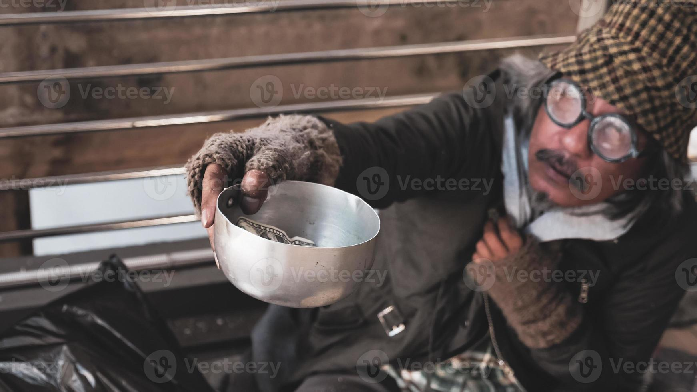

Local bands are a pivotal aspect to the music scene in Australia, as they enrich the culture of Australia and provide major economic benefits to the country, as they fill up pubs and bars with live performances, and with your help, you can keep these talented bands afloat, as they suffer economically big time despite their contribution to the economy.


Though small artists/bands contributed around $15.7 billion and produced 80,000 jobs in 2022 through a variety of bar/pub performances and smaller venues, around 50% of Australian artists didn't even make $6,000 from a year of musical work — roughly 15% of what a minimum-wage worker makes in Australia.
Another study by The Bassline shows that the median musician income is $14,700 a year — about a quarter of the national median.
You could help your local band by buying their merch, buying PHYSICAL AUDIO FORMATS, using more ethical streaming services like Tide which pay the most at around 0.013 cents per stream, which is significantly greater than other platforms. Also, don't underestimate the word of mouth. The good old way many bands have become popular, it can still be effective in this day and age. And it doesn't even have to be literal word in person, leaving a song on your Instagram note or putting the song on TikTok could help the band gain traction.
go back!